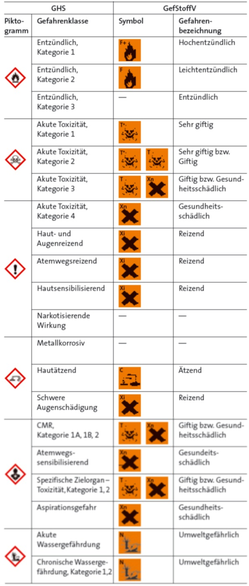

Da Chemikalien in der ganzen Welt hergestellt und gehandelt werden, wurde von den Vereinten Nationen ein weltweit harmonisiertes System für die einheitliche Einstufung und Kennzeichnung von Stoffen und Gemischen (GHS = Global harmonisiertes System zur Einstufung und Kennzeichnung von Chemikalien) entwickelt. Europaweit erfolgte die Umsetzung der GHS-Regelungen durch die CLP-Verordnung (Verordnung (EG) Nr. 1272/2008 über die Einstufung, Kennzeichnung und Verpackung von Stoffen und Gemischen), die seit Januar 2009 in jedem Mitgliedsstaat unmittelbar gültig ist.
Große Veränderungen sind bei den Kennzeichnungselementen erfolgt. Anstelle der bisherigen orangefarbenen Gefahrensymbole werden im GHS-System weiße, rautenförmige Piktogramme mit rotem Rahmen verwendet. Das „Andreaskreuz“ gibt es unter GHS nicht mehr, dafür kommen neue Gefahrenpiktogramme wie das „Ausrufezeichen“,„Unter Druck stehende Gase“ und „Gesundheitsgefahr“ hinzu. Die Kennbuchstaben entfallen.
Zusätzlich zu den Gefahrenpiktogrammen werden als neue Kennzeichnungselemente die Signalwörter „Gefahr“ bzw. „Achtung“ für schwerwiegende bzw. weniger schwerwiegende Gefährdungen eingeführt.
Bisher wurden die gefährlichen Eigenschaften durch 15 Gefährlichkeitsmerkmale wie „hochentzündlich“, „giftig“ usw. beschrieben. Im GHS-System werden die Gefahren in 28 Gefahrenklassen eingeteilt, z.B. „Ätz-/Reizwirkung auf die Haut“, „entzündbare Flüssigkeiten“, „Karzinogenität“.
Aufgrund geänderter Einstufungskriterien bei einigen Gefahrenklassen kann es bei bestimmten Stoffen und Gemischen zu Änderungen in der Einstufung und Kennzeichnung kommen.
In einer Übergangszeit bis zum 30.11.2010 für Einzelstoffe und bis 31.05.2015 für Gemische (Zubereitungen) kann die Kennzeichnung nach dem bisherigen System oder – alternativ – nach der CLP-Verordnung (GHS-System) erfolgen. Zusätzlich gibt es noch eine 2-jährge Übergangsfrist für vorher hergestellte Lagerbestände.
Zuordnung der GHS-Gefahrenpiktogramme (Auswahl)
